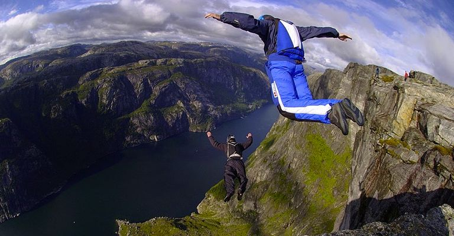

Бейсджампинг
Бейсджампинг (англ. BASE jumping) — экстремальный вид спорта, в котором используется специальный парашют для прыжков с фиксированных объектов.
B.A.S.E. — акроним от английских слов:
- B. – building – здание (ветер сзади и с боков)
- A. – antenna – антенна (ветер сквозь)
- S. – span – балка, мост (ветер снизу)
- E. – earth – земля (ветер над)
Это перечень основных типов объектов, с которых выполняются прыжки. Спортсменов называют бейсджамперами (от англ. basejumper) или просто бейсерами. Бейсджампинг считается наиболее опасным видом прыжков с парашютом и на текущий момент рассматривается как крайне экстремальный спорт.
Высота, с которой осуществляется прыжок бейсджампера, может быть от 40 метров до 1000, в то время как обычные парашютисты прыгают с высоты не менее 1000 метров. Чем ниже объект, тем выше считается мастерство джампера, и тем опаснее прыжок.

Еще одна сложность именно этого вида спорта заключается в том, что раскрыть парашют нужно всего за несколько секунд в самом начале прыжка. Для бейсджампинга используются специально разработанные парашюты, которые значительно отличаются от обычных. В них нет запасного парашюта, так как он не пригодится на столь маленькой высоте, и нет страхующих приборов.
Сложность в бейсджампинге заключается еще и в том, что приземление, обычно, происходит на ограниченные поверхности, и поэтому требует большого опыта от бейсджампера пилотирования парашюта.
Попытки самостоятельных бейс-прыжков без соответствующего оборудования и навыков, как правило, приводят к тяжёлым травмам или смерти.